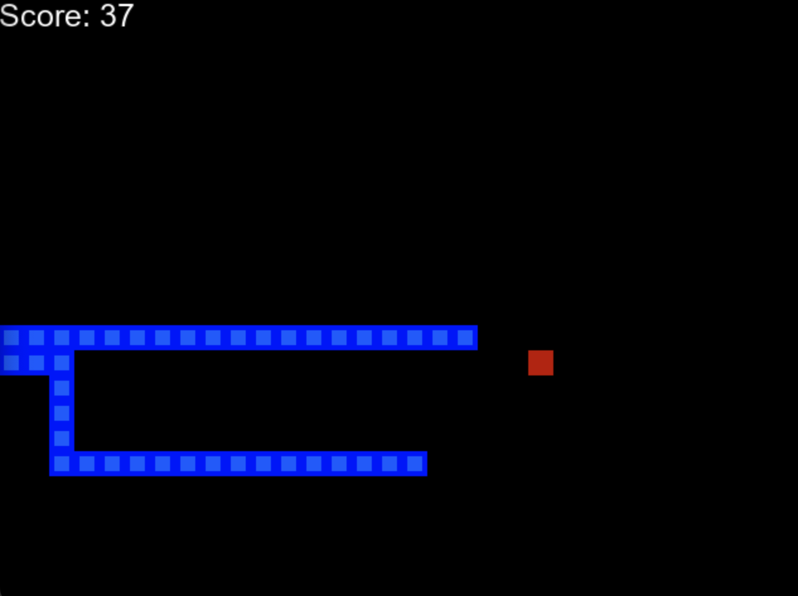
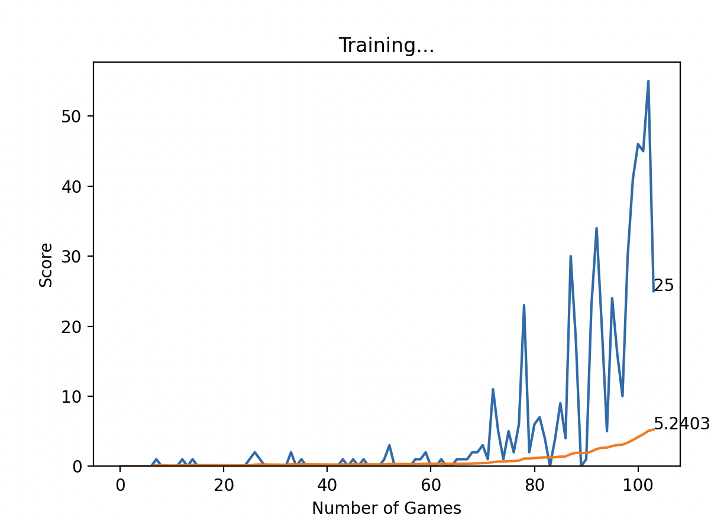
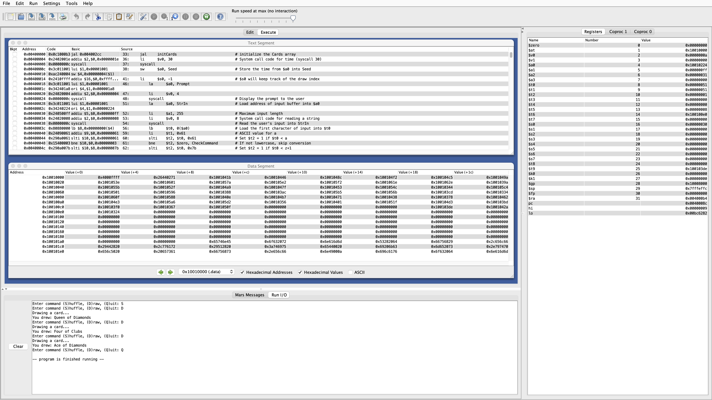
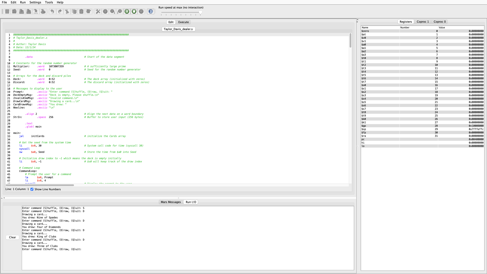
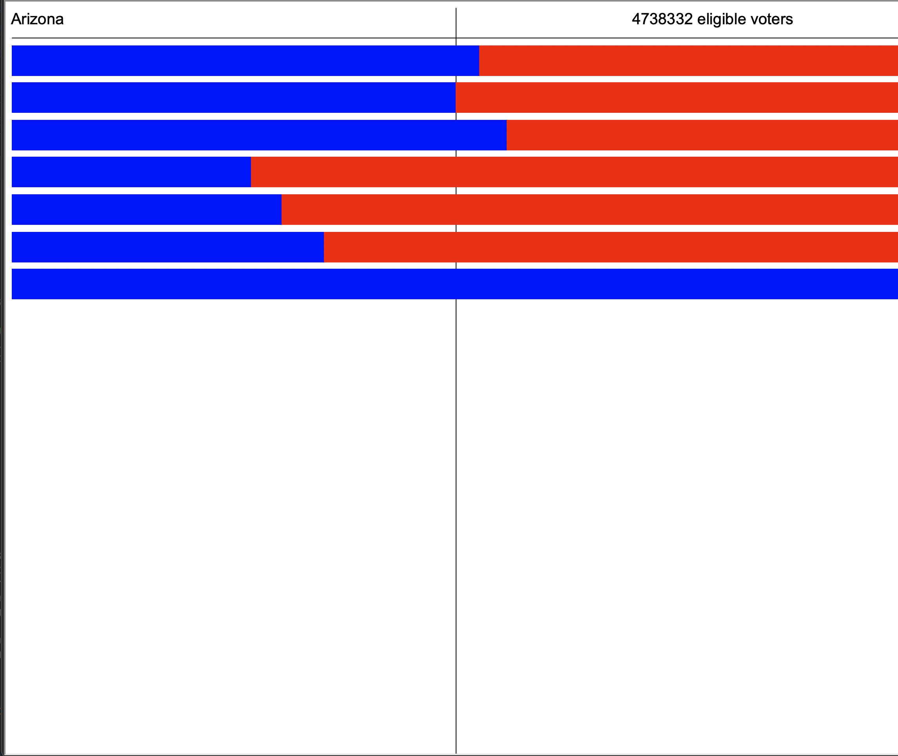
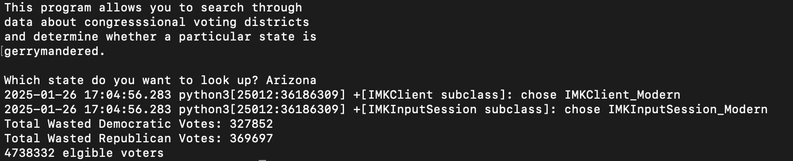

I'm a cheerful and ambitious student with a 4.0 GPA, studying Computer Science and Information Systems Management. I aspire to be an inovative engineer in the defence contracting industry.
Phone: (928) 243-8066
Email: tjdavis5151@gmail.com
Linkedin: www.linkedin.com/in/taylor-j-davis
Resume: Click Here to Download
Proficient Technical Skills |
Soft Skills |
|
|
AI Playing Snake - Over my recent winter break I programmed a custom snake game in python. After making the game I used pytorch and tensor flow to create an Neural Network that could play the game. I did this by creating a reenforment learning model. After training, the AI could get scores double and triple what I could.
|  |  |
Random Deck Generator - During my computer organization and assembly language class, I build a program using MIPS assembly langauge that could generate and randomize a virtual deck of cards. Although simple in python or c, doing this in assembly was quite the challenge. I implemented a custom random number generator, and multiple complex data structures to make this program.
|  |  |
Jerrymandering Checker - In my python for computer science class I used a classic functional design to perform complicated I/O with a large data set to check if any one of the 50 states performed jerrymandering. A custom graphical display, using the turtle module, gave the results in a simple colorful chart.
|  |  |
| Position | Company/Institution | Location | Year | Details |
|---|---|---|---|---|
| Software Developer | Purple Moon Technologies | Flagstaff, AZ | 2023 |
|
| Regional Manager, Client Consultant, and Technician | Arrow Blinds and Shutters | Flagstaff, AZ | 2022-Present |
|
| Supplemental Instructor (Financial Accounting) | Northern Arizona University | Flagstaff, AZ | 2023 |
|